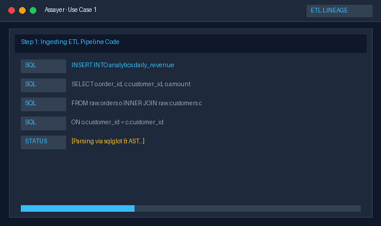
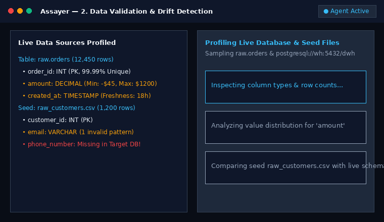
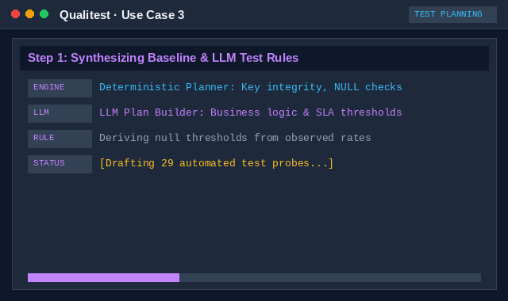
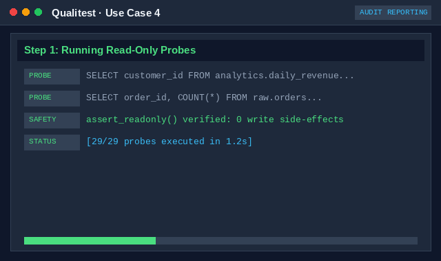

Assayer connects your databases, code repositories, and web applications to an autonomous AI agent. It inspects evidence, extracts column-level ETL lineage, profiles schema drift, and runs non-destructive Playwright browser checks.
demo_daily_revenue.sql & PostgreSQL warehouse postgresql://wh:5432/dwh.
analytics.daily_revenue (5 columns)customer_id joinraw.orders.order_idEnd-to-end evidence-based testing across data infrastructure and frontend web interfaces.
Parses SQL queries with sqlglot, Python AST scripts, and dbt manifests. Extracts column-level lineage and automatically flags non-idempotent appends or drop-row risks.
Non-destructively profiles live databases (Postgres, ClickHouse, Snowflake, DuckDB) and seed CSV/Parquet files to detect schema contract violations and distribution drift.
Headless browser integration verifies same-origin route availability, DOM element presence, network/console health, screenshot visual drift, and database-to-UI value parity.
The agent drafts target-specific check proposals for engineer review before execution. Probes run only after approval with single read-only transactions.
Calculates a weighted QA quality score (0–100), captures sample failure rows, and uses LLM reasoning to explain root causes and recommended fixes.
Ships with a local bundled LLM runner (qwen2.5-coder). Credentials are protected as redacted secrets, and data probes are strictly read-only.
See how Assayer operates across intake, profiling, plan review, and scorecard generation.

Parses complex SQL CTEs and Python dataframes into interactive column lineage graphs with automatic risk detection.

Inspects live database tables and CSV seed files to compare schema contracts and highlight anomaly row counts.

3. Test Planning Across Targets
Generates baseline and LLM-augmented test suites for approval before running non-destructive queries.

Executes probes in parallel, captures failure row samples, and outputs overall quality scores with root cause analysis.
Designed with FastAPI, LangGraph, Redis execution workers, and Next.js OpenUI frontend.
+-----------------------------------------------------------------------------------+
| Next.js 14 Chat UI |
| (OpenUI Lang / AG-UI SSE Protocols) |
+------------------------------------------+----------------------------------------+
|
v
+-----------------------------------------------------------------------------------+
| FastAPI + LangGraph Backend |
| +--------------------+ +-----------------------+ +------------------------+ |
| | ETL Parsers | | Connector Engine | | Agent Planner & Graph | |
| | (sqlglot / AST) | | (Postgres / Clickhouse| | (LangGraph State Machine| |
| | | | Snowflake / DuckDB) | | Human-in-the-Loop) | |
| +--------------------+ +-----------------------+ +------------------------+ |
+------------------------------------------+----------------------------------------+
|
v
+-----------------------------------------------------------------------------------+
| Redis Queue & Check Executor Worker |
| +------------------------------------+ +----------------------------------+ |
| | Aggregate Read-Only SELECT Probes | | Headless Playwright Chromium | |
| +------------------------------------+ +----------------------------------+ |
+-----------------------------------------------------------------------------------+
Spin up the entire stack including local model, database, and web interface in 60 seconds.
# 1. Clone the repository
git clone https://github.com/assayer/assayer.git
cd assayer
# 2. Start all services in Docker (UI, API, Redis, Worker, Local Ollama)
docker compose up -d --build
# 3. Open http://localhost:3010 in your browser!| Service | Endpoint / Port | Description |
|---|---|---|
| Chat UI | http://localhost:3010 |
OpenUI Agentic Chat & Project Knowledge Base |
| API Docs | http://localhost:8010/docs |
FastAPI Swagger REST & SSE OpenAPI documentation |
| Health Check | http://localhost:8010/healthz |
Backend & Database readiness endpoint |